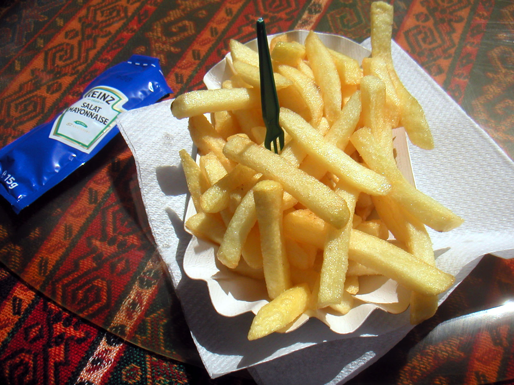
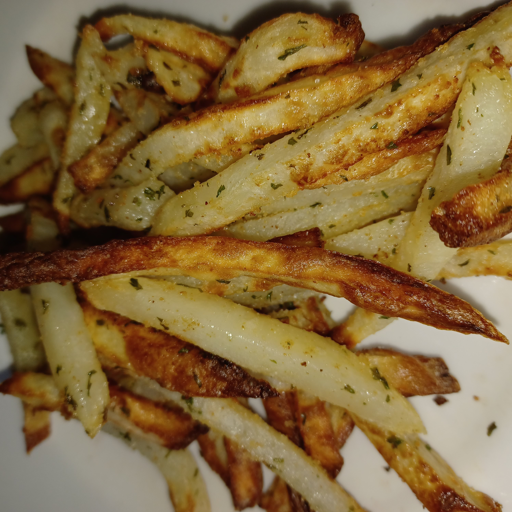
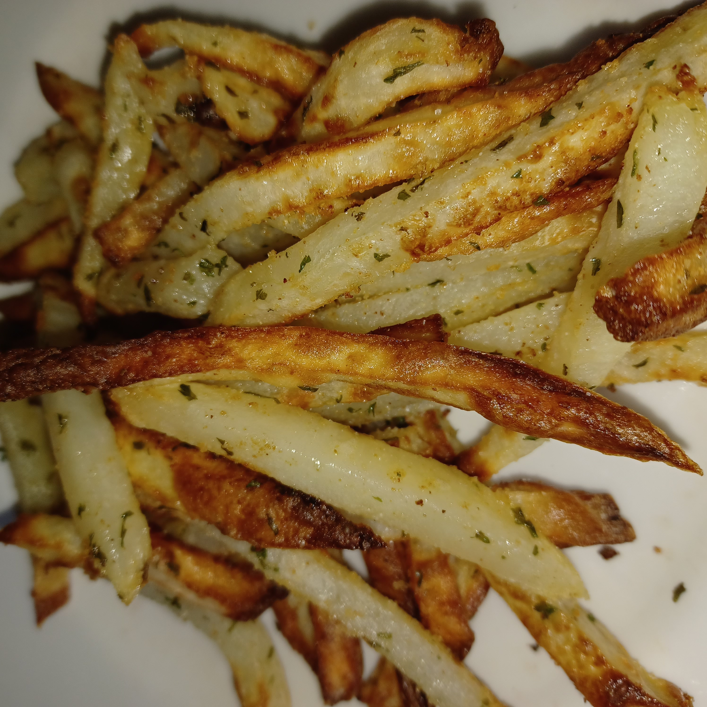
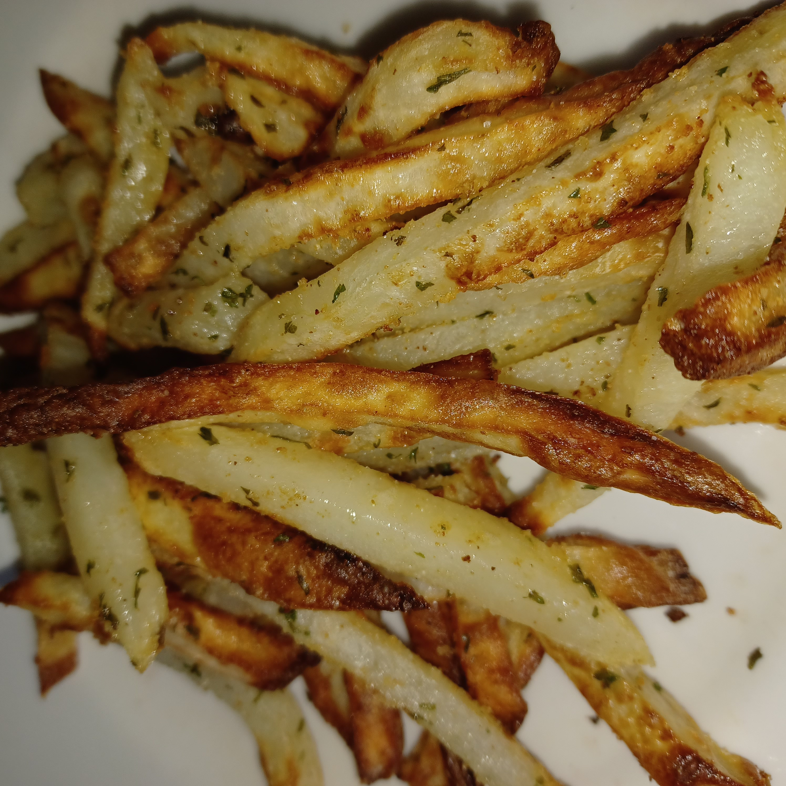

Global French Fry Variants
French fries have been reinvented all over the world:



 


Popular toppings include cheese curds & gravy (Canada), peanut sauce & onions (Netherlands), curry ketchup (Germany), and chili con carne (USA).